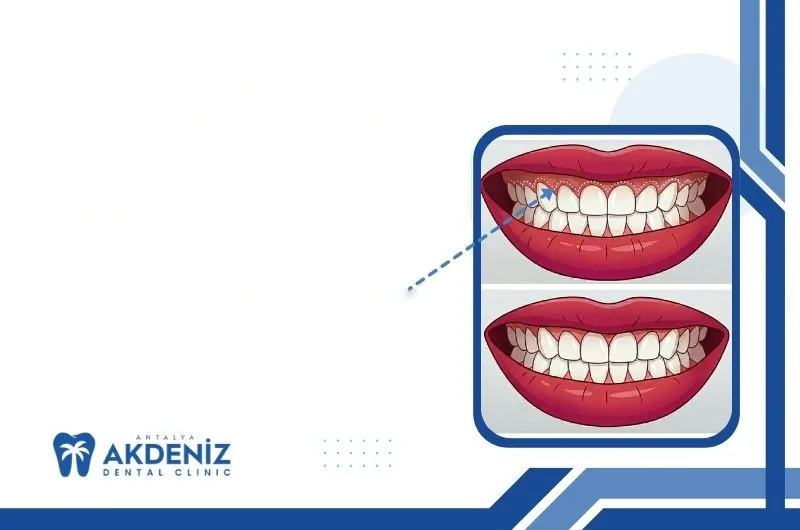

Konturowanie dziąseł: przyczyny, zabieg, gojenie i ryzykoKonturowanie dziąseł (modelowanie lub redukcja dziąseł) to zabieg, w którym specjalista zmienia poziom i kształt linii dziąseł.Konturowanie dziąseł (nazywane też modelowaniem lub redukcją dziąseł) to zabieg stomatologiczny wykonywany przez specjalistę w celu zmiany poziomu i kształtu linii dziąseł.
Kiedy potrzebne jest konturowanie dziąseł?
Względy estetyczne i projekt uśmiechu
Konturowanie dziąseł najczęściej stosuje się w celu poprawy estetyki. Wielu pacjentów decyduje się na tę metodę, gdy uważa, że ich uśmiech jest „niezrównoważony”.
Uśmiech dziąsłowy:
Zabieg wykonuje się, gdy przy uśmiechu dziąsła są widoczne bardziej niż zwykle, przez co zęby wydają się mniejsze, niż są w rzeczywistości, lub „kwadratowe”.
Asymetryczna linia dziąseł:
Gdy linia dziąseł przy niektórych zębach jest wyżej, a przy innych niżej, zęby wydają się mieć różną wielkość. Konturowanie wyrównuje tę linię, aby uzyskać jednolity wygląd.
Zęby wyglądające na mniejsze, niż są w rzeczywistości:
Nadmiar tkanki dziąsłowej zakrywa koronę zęba, zaburzając estetyczne proporcje zębów; usunięcie tej tkanki odsłania prawdziwą wielkość zębów.
Wskazania medyczne i zdrowotne
Choć może się wydawać, że to zabieg czysto estetyczny, konturowanie dziąseł czasem staje się koniecznością medyczną.
Choroby dziąseł (problemy periodontologiczne):
Gdy leki lub głębokie oczyszczanie nie wystarczają, ten zabieg może zostać zalecony w celu spłycenia kieszonek dziąsłowych i wyeliminowania miejsc, w których mogą gromadzić się bakterie.
Usuwanie pułapek bakteryjnych:
Jeśli w dziąsłach występują „zagłębienia” lub miejsca trudne do oczyszczenia, gromadzące się tam resztki jedzenia mogą prowadzić do zakażenia, ropni, a nawet utraty zęba. Konturowanie sprawia, że miejsca te stają się dostępne do czyszczenia.
Przerost po leczeniu ortodontycznym:
Po leczeniu ortodontycznym, np. aparatem stałym, można zaobserwować nadmierny przerost tkanki dziąsłowej; ten nadmiar tkanki usuwa się podczas zabiegu.
Wskazania odtwórcze i czynnościowe
Konturowanie dziąseł może być etapem przygotowawczym, który zapewnia powodzenie innych zabiegów wykonywanych na zębach.
Wydłużenie korony klinicznej:
Jeśli widoczna część zęba jest niewystarczająca, aby utrzymać wypełnienie lub koronę z powodu próchnicy, złamania lub starcia, tkankę dziąsłową się cofa, aby zapewnić dostęp do tkanek zęba.
Zachowanie szerokości biologicznej:
Jeśli uzupełnienia (wypełnienia/korony) zostaną umieszczone zbyt blisko dziąsła lub poniżej linii dziąseł, może to prowadzić do stanu zapalnego. Ten zabieg tworzy zdrową przestrzeń dla brzegów uzupełnień.
Przypadki braków zębowych (hipodoncja):
W niektórych przypadkach wrodzonego braku zębów linię dziąseł przesuwa się, aby zapewnić estetyczną harmonię między istniejącymi zębami a późniejszymi implantami lub mostami.
Czynniki genetyczne i anatomiczne
U niektórych osób stan dziąseł wynika wyłącznie z przyczyn genetycznych lub anatomicznych.
Predyspozycje genetyczne:
Niektóre osoby rodzą się z grubszą lub obfitszą tkanką dziąsłową.
Budowa warg i szczęki:
Gdy górna warga jest nadmiernie ruchoma (nadaktywna) lub szczęka jest nadmiernie rozwinięta w wymiarze pionowym, konturowanie dziąseł stosuje się w celu złagodzenia skutków tej nierównowagi anatomicznej.
Jak przebiega konturowanie dziąseł?
Konturowanie dziąseł to zabieg wykonywany zwykle w warunkach klinicznych przez periodontologa lub dentystę zajmującego się stomatologią estetyczną i trwa około 1–2 godzin. Zabieg składa się zazwyczaj z następujących etapów:
Konsultacja i planowanie
Proces rozpoczyna się od szczegółowej konsultacji, podczas której dentysta omawia Twoje oczekiwania estetyczne. Na tym etapie dentysta ocenia stan dziąseł; sprawdza, czy występują schorzenia wymagające leczenia w pierwszej kolejności, takie jak choroba dziąseł lub próchnica. Mogą zostać wykonane zdjęcia, aby określić proporcje dziąseł do zębów oraz ocenić położenie warg i budowę twarzy, a następnie sporządza się indywidualny plan leczenia.
Znieczulenie i przygotowanie
W okolicę dziąseł podaje się znieczulenie miejscowe, aby podczas zabiegu nie odczuwać bólu. W niektórych przypadkach dla większego komfortu można też zaproponować sedację. Gdy znieczulenie zacznie działać, dentysta specjalnym pisakiem zaznacza, gdzie będzie przebiegać nowa linia dziąseł.
Modelowanie tkanki dziąsłowej
Na tym etapie dentysta modeluje linię dziąseł, usuwając nadmiar tkanki. Podczas zabiegu stosuje się dwa główne narzędzia:
Laser do tkanek miękkich:
To obecnie najczęściej wybierana metoda. Ponieważ laser bardzo precyzyjnie tnie tkankę, jednocześnie zamykając naczynia krwionośne (koagulacja), krwawienie jest minimalne, ryzyko zakażenia niskie, a szwy zwykle nie są potrzebne.
Tradycyjny skalpel:
Stosuje się go zwłaszcza w bardziej złożonych przypadkach, gdy trzeba usunąć ponad 2 mm tkanki, lub w sytuacjach, w których laser nie jest odpowiedni. Przy tej metodzie mogą być potrzebne szwy, aby utrzymać tkankę w odpowiednim miejscu.
Modelowanie kości (konturowanie kostne)
U niektórych pacjentów może być konieczne wymodelowanie niewielkiej ilości tkanki kostnej pod dziąsłami, aby dziąsła na stałe pozostały w pożądanym położeniu. Jeśli poziom kości jest zbyt wysoki, a ten etap zostanie pominięty, istnieje ryzyko, że dziąsła wrócą do poprzedniego stanu (nawrót).
Zakończenie i odbudowa
Po wymodelowaniu dziąseł, jeśli zastosowano szwy, okolicę się zamyka. W niektórych przypadkach konturowanie dziąseł łączy się z dodatkowymi zabiegami estetycznymi, takimi jak licówki lub wybielanie zębów, aby poprawić kolor i kształt zębów.
Jak wygląda rekonwalescencja po konturowaniu dziąseł?
Rekonwalescencja po konturowaniu dziąseł trwa zwykle tydzień lub krócej, w zależności od zastosowanej metody i tempa gojenia organizmu. Jednak pełne wygojenie tkanek i ustabilizowanie się efektu może potrwać kilka dni lub tygodni.
Rekonwalescencja przebiega następująco:
Pierwsze dni i ogólna aktywność
- Odpoczynek: w dniu zabiegu zaleca się ograniczenie aktywności i odpoczynek. Większość pacjentów może wrócić do pracy lub szkoły w ciągu 1–2 dni.
- Drętwienie i tkliwość: działanie znieczulenia miejscowego ustępuje w ciągu kilku godzin, po czym może pojawić się łagodna bolesność lub tkliwość.
- Ćwiczenia: przez pierwsze 5 dni należy unikać intensywnego wysiłku, który przyspiesza tętno, oraz dźwigania ciężarów, ponieważ może to nasilić krwawienie, obrzęk i ból.
Odżywianie i dieta
Aby przyspieszyć gojenie, przez pierwsze dni (zwykle 2–3 dni) należy spożywać miękkie i letnie lub zimne pokarmy.
- Zalecane: odpowiednie są pokarmy, które nie podrażniają dziąseł, takie jak jogurt, jajka, makaron, gotowane warzywa, mus jabłkowy, galaretka i lody.
- Pokarmy, których należy unikać: przez około tydzień należy unikać twardych, chrupiących, pikantnych i bardzo gorących pokarmów.
- Owoce z pestkami: pod żadnym pozorem nie wolno spożywać produktów z drobnymi pestkami lub ziarenkami, takich jak kiwi, truskawki, popcorn czy mak, ponieważ mogą utknąć pod gojącym się dziąsłem i spowodować zakażenie.
Pielęgnacja i higiena jamy ustnej
- Czyszczenie: bardzo ważne jest przestrzeganie szczegółowych instrukcji szczotkowania zaleconych przez dentystę. Zęby należy szczotkować bardzo delikatnie, a nici dentystycznej używać ostrożnie.
- Płyny do płukania: aby zapobiec gromadzeniu się bakterii, można stosować płyny bez alkoholu lub roztwory antybakteryjne zalecone przez lekarza.
- Woda z solą: płukanie wodą z solą, przygotowaną przez dodanie łyżeczki soli do szklanki ciepłej wody, to idealny sposób na usunięcie resztek jedzenia z jamy ustnej po posiłkach.
Łagodzenie bólu i objawy
- Leki: w celu złagodzenia dyskomfortu można stosować dostępne bez recepty leki przeciwbólowe, takie jak paracetamol lub ibuprofen. Zwykle nie zaleca się jednak aspiryny, ponieważ może nasilać krwawienie.
- Normalne objawy: w trakcie gojenia naturalne jest niewielkie obrzmienie lub „strupek” (złuszczanie się gojącej tkanki) w okolicy zabiegu i nie wpływa to na ostateczny wygląd.
- Różnica metod: ponieważ przy zabiegach laserowych tkanka zostaje zamknięta (skauteryzowana), ryzyko krwawienia i zakażenia, a także czas rekonwalescencji są znacznie mniejsze niż przy metodzie chirurgicznej (skalpel).
Długoterminowa kontrola
Dentysta zwykle wyznacza wizytę kontrolną kilka dni lub tydzień po zabiegu, aby sprawdzić przebieg gojenia. Pełne dostosowanie się dziąseł do nowego kształtu i ocena, czy efekt pozostanie stabilny, może potrwać około 8–12 tygodni. Jeśli mają zostać założone uzupełnienia estetyczne, takie jak licówki porcelanowe, czasem trzeba odczekać nawet 6 miesięcy, aby wyeliminować ryzyko recesji dziąseł.
Czy konturowanie dziąseł wiąże się z ryzykiem?
Konturowanie dziąseł wykonane przez wykwalifikowanego dentystę lub periodontologa jest bardzo bezpiecznym zabiegiem. Jednak, jak przy każdym zabiegu chirurgicznym, istnieje kilka rzadkich zagrożeń i skutków ubocznych związanych z tym zabiegiem.
Możliwe zagrożenia i powikłania to:
Ryzyko zakażenia i powikłań w gojeniu
Jak przy każdym zabiegu chirurgicznym, po zabiegu istnieje ryzyko rozwoju zakażenia. Narastający ból dziąseł, nadmierny obrzęk lub wydzielina mogą być oznakami zakażenia. Ponadto w trakcie gojenia drobne pokarmy z ziarenkami, takie jak kiwi czy kukurydza, mogą utknąć pod linią dziąseł, co może utrudnić gojenie i prowadzić do powikłań.
Odrost tkanki dziąsłowej (nawrót)
Jednym z najczęstszych zagrożeń jest powrót tkanki dziąsłowej do pierwotnego położenia z upływem czasu. Zwykle dzieje się tak, gdy kość pod spodem nie została wystarczająco wymodelowana. Organizm może czasem odbudowywać tkankę, aby zachować jej naturalną szerokość; dlatego prawidłowe ustawienie poziomu kości jest kluczowe dla długotrwałych efektów.
Estetyczne i czynnościowe skutki uboczne
Po zabiegu między zębami mogą powstać nieestetyczne przestrzenie zwane „czarnymi trójkątami”. Inne możliwe zagrożenia czynnościowe to:
- Nadwrażliwość korzeni: może wystąpić w wyniku cofnięcia się tkanki dziąsłowej i odsłonięcia powierzchni korzenia.
- Resorpcja: w rzadkich przypadkach może dojść do utraty tkanki korzenia zęba.
- Przejściowa ruchomość zębów: po zabiegu można zaobserwować przejściowe rozchwianie zębów.
Naruszenie szerokości biologicznej
Ingerencja w ochronną przestrzeń między linią dziąseł a kością, zwaną „szerokością biologiczną”, może prowadzić do przewlekłego zapalenia dziąseł, recesji dziąseł, utraty kości i powstawania kieszonek w tej okolicy.
Konturowanie dziąseł: najczęściej zadawane pytania
Czy konturowanie dziąseł boli?
Ponieważ zabieg wykonuje się w znieczuleniu miejscowym, nie odczuwa się bólu. Po zabiegu może wystąpić pewna tkliwość, ale zwykle jest łagodna.
Czy do konturowania dziąseł lepszy jest laser, czy skalpel?
Leczenie laserowe wiąże się z mniejszym krwawieniem, szybszym gojeniem i mniejszym ryzykiem zakażenia; obecnie jest często wybierane.
Ile trwa rekonwalescencja po konturowaniu dziąseł?
Pełne wygojenie trwa zwykle około tygodnia. Łagodny obrzęk i tkliwość przez pierwsze 2–3 dni są normalne.
Czy korzenie moich zębów zostaną odsłonięte?
Doświadczony dentysta usunie tylko nadmiar tkanki, chroniąc powierzchnię korzenia. Jeśli jednak usunie się zbyt dużo tkanki, może wystąpić nadwrażliwość.
Ile trwa zabieg konturowania dziąseł?
Zwykle trwa od 30 do 60 minut; zależy to od liczby leczonych obszarów.
Czy efekt konturowania dziąseł jest trwały?
Tak, usunięta tkanka nie odrasta. Zmiany mogą jednak wystąpić w wyniku schorzeń takich jak choroba dziąseł lub stosowania niektórych leków.
Dla kogo konturowanie dziąseł nie jest odpowiednie?
Nie jest zalecane osobom z czynnym zapaleniem dziąseł, niewyrównaną cukrzycą, zaburzeniami krzepnięcia krwi ani kobietom w ciąży.
Czy powoduje recesję dziąseł?
Nie, wręcz przeciwnie – ponieważ usuwa się nadmiar tkanki, w niektórych przypadkach ryzyko recesji się zmniejsza. Rzadko recesja może zostać wywołana, jeśli zabieg nie zostanie właściwie zaplanowany.
Czy zabieg wykonuje się w kilku sesjach?
Większość przypadków kończy się w jednej sesji. Przy bardzo dużych obszarach mogą być potrzebne dwie sesje.
Czy po konturowaniu dziąseł można założyć aparat ortodontyczny?
Tak, ale zaleca się rozpoczęcie leczenia po pełnym wygojeniu (po około 4–6 tygodniach).
Czy istnieją alternatywy dla konturowania dziąseł?
Alternatywą mogą być wydłużenie korony klinicznej (chirurgiczne), ortodontyczny projekt uśmiechu lub botoks (w górnej wardze w przypadku „uśmiechu dziąsłowego”).